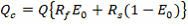
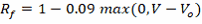
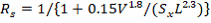
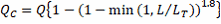
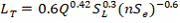
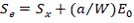

Grate Inlets
Flow capture for grated inlets located on-grade is computed as follows:



where:
QC |
= |
captured flow (cfs) |
Q |
= |
approach flow (cfs) |
EO |
= |
ratio of flow over grate to total flow (depends on grate width) |
RF |
= |
frontal capture efficiency |
RS |
= |
side capture efficiency |
V |
= |
velocity of flow over the grate (ft/s) |
VO |
= |
velocity at which water begins to splash over the inlet (depends on grate length) (ft/s) |
SX |
= |
street cross slope (ft/ft) |
L |
= |
grate length (ft) |
More information on determining values for EO and VO can be found in the HEC-22 Manual.
Curb Opening Inlets
Flow capture for curb opening inlets placed on-grade is computed as follows:



where:
L |
= |
length of curb opening (ft) |
LT |
= |
length at which full capture is achieved (ft) |
SL |
= |
longitudinal street slope (ft/ft) |
n |
= |
Manning's roughness coefficient for the street surface |
a |
= |
curb depression (ft) |
W |
= |
depressed gutter width (ft) |
EO |
= |
ratio of flow over depressed gutter width to total flow |
and a, W and EO only apply to composite street sections with depressed gutters.
Combination Inlets
A combination inlet consists of both a grate and curb opening placed together at the same location. Its on-grade flow capture equals that of the grate plus any flow captured by the portion of the curb opening that extends upstream of the grate’s length. The latter flow capture is computed first and is subtracted from the approach flow used to determine the grate’s flow capture.
Slotted Inlets
The flow capture capability of a slotted inlet located on-grade is the same as that of a curb opening inlet of equal length.